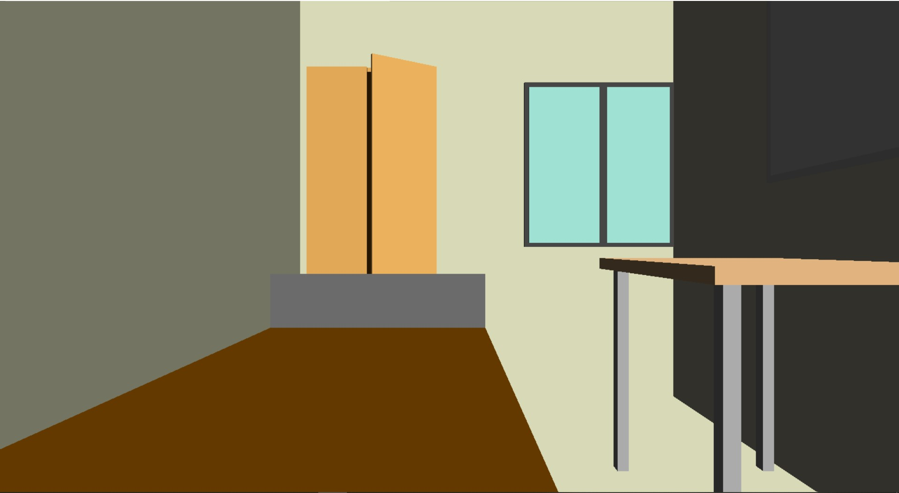
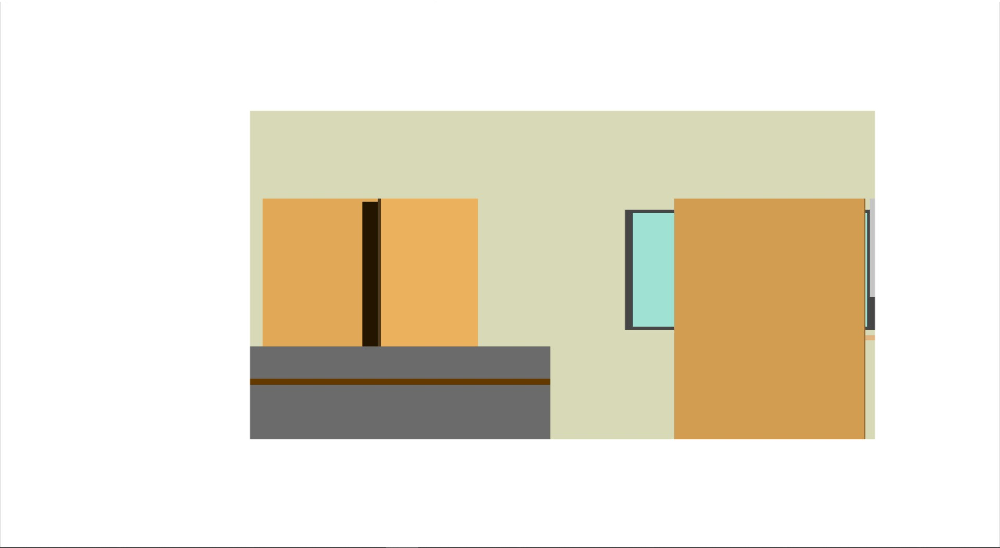

A model of my room and a demonstration of camera manipulation in OpenGL
Kartikeya Dubey - 2020A7PS0031H
Group E
Camera manipulation and projection manipulation is a very interesting aspect of Computer Graphics. Using
OpenGLs built in functions glOrtho and glFrustum one can select the type of perspective they wish to employ.
To manipulate the camera is more complex. Since cameras employ the uvn axes, we must also deal with these axes if
we wish to manipulate the camera in a meaningful and accessible manner. To do this, we employ the glm library. This library
makes dealing with homogeneous coordinates easier and has functions to perform matrix mathematics that would otherwise be a chore to code.
We first compute the u, v and n axes using the camera's position, camera target's position and the provided UpVector:
glm::vec3 n = glm::normalize(cameraPos - cameraTarget);
glm::vec3 u = glm::normalize(glm::cross(upVector, n));
glm::vec3 v = glm::cross(n, u);
Now that we have the u, v, and n, axes, panning in these directions is simply a matter of addition. Rotation however, is a challenge. Since we are
in 3D space, we have employed quaternion rotation. First the rotation matrice is found and then this matrice is applied to the GL_MODELVIEW matrix to
to ensure everything is rotated accordingly. The camera is position is controlled as so:
w: Move forwards along n axis
s: Move backwards along n axis
a: Move leftwards along u axis
d: Move rightwards along u axis
t: Move upwards along v axis
g: Move downwards along v axis
r: Resets camera position to initial position
And to control the orientation of the camera we use:
1: Rotate anti-clockwise along positive upVector as axis (yaw)
2: Rotate anti-clockwise along positive u axis (pitch)
3: Rotate anti-clockwise along position n axis (roll)
4: Rotate clockwise along positive upVector as axis (yaw)
5: Rotate clockwise along positive u axis (pitch)
6: Rotate clockwise along position n axis (roll)
r: Resets camera orientation to initial orientation
The space has been modelled using GL_QUADS, which render a quad on screen.
To provide clarity while viewing, any walls of the designed room that obstruct the camera view are not rendered. This is done via code and not using any textures.
As an example consider the situation when:
In this case, the left wall, the front wall and the roof are not rendered, as they obstruct the camera's view.
First, we use perspective projection with
glFrustum(-ar, ar, -1.0, 1.0, 2.0, 100.0);
Where ar is the aspect ratio of the window
1/7

As can be seen, any wall/roof of the room that obstructs the camera does not render.
Moving on, we use perspective projection. To accomplish this, we use
glOrtho(-20, 20, -20, 30, 0, 100);
1/5

However, in paralled projection, we run into an issue. Since there is no measure of depth as there is in perspective projection,
sometimes our function renders some walls/roofs that we think should not be rendered. This can be seen below, the first frame shows the
erroneos versions, the second shows the proper image that can be obtained usually by moving the camera backwards along the n axis